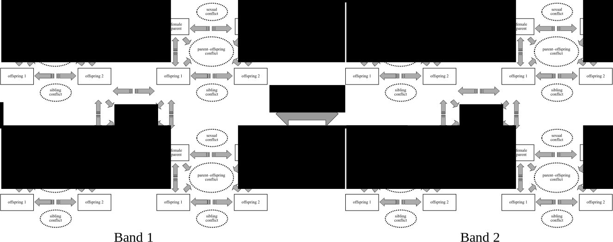

Nancy Pelosi recently won a major conflict with Trump over border wall funding, and her victory flipped the media narrative. Instead of the insider who was out-of-step with both mainstream Americans and the progressive wing of her party, Pelosi was now seen as a masterful leader. The source of Pelosi’s moxie, according to many articles that appeared at the time, is that she’s a mother of five, and the daughter of another powerful women who raised six kids. Mothering and leadership, it seems, go together. What’s the link?
My grad student Zach Garfield and I believe we might have the answer. Despite the fact that almost all leaders in all societies are men, natural selection for leadership abilities might have been strongest in women, at least initially (preprint). I started thinking about this problem almost 20 years ago when the New Yorker and W.W. Norton published an article and book by Patrick Tierney that tried to profit from a measles vaccine scare, similar to the efforts of Andrew Wakefield and Jenny McCarthy (the latter two have been depressingly successful – there is a measles outbreak near our campus in southwest Washington).
Here’s the story of how an attempt to make a buck off a vaccine scare unearthed an important but virtually unknown theory by one of the fathers of American genetics, James Neel.
Late in the summer of 2000, an email spread like, well, measles, through the anthropological community. Sent by two credulous anthropologists, it advertised an upcoming book and New Yorker article by Patrick Tierney that accused James Neel, an acclaimed geneticist, and Nap Chagnon, a well-known but controversial anthropologist, of deliberately administering a dangerous measles vaccine to native South Americans. This vaccine could supposedly cause or exacerbate a deadly measles epidemic, allowing Neel and Chagnon to study the effects of the disease in an indigenous population so as to test Neel’s sinister eugenics theory.
Prior to this I was vaguely aware of Neel’s work on the genetics of Native South Americans. Chagnon, on the other hand, I knew well. He was my MA thesis adviser. Our department chair therefore asked me and Michael Price, another grad student who had worked with Chagnon, to investigate. Along with John Tooby, a colleague of Chagnon (and chair of my PhD committee), we starting retrieving all the documents cited in Tierney’s meticulously referenced book.
The vaccine story crumbled almost immediately. Tierney had deliberately misquoted all of his sources, each and every one of which documented the safety and effectiveness of the vaccine. You can read our report here. Neel and Chagnon’s vaccination program probably saved hundreds of lives.
But Neel’s sinister theory intrigued me. It had something to do with the evolution of human intelligence, but I had never seen it cited in any of the countless papers on the topic. Once I got hold of Neel’s publications and figured out what he was actually saying, as opposed to Tierney’s mangled version, I realized it was a damn good idea. Neel’s research in the early 1960’s had found that in Amazonian populations, headmen had more wives and children than other men, a pattern that has now been seen in many other populations. Neel reasoned that if this pattern characterized humans societies during our evolution, there would have been tremendous sexual selection for whatever trait(s) predisposed men to become leaders.
Sexual selection often results in exaggerated traits. In gorillas, for example, a single adult male typically has a harem of several females. This means that several other adult males do not have mates. Males therefore physically compete with other males for access to females. As a consequence, male gorillas are about twice as large as female gorillas, and have much larger canine teeth. Chimpanzee males are modesty larger than females, and also have much larger canines (Plavcan 2001).
Human males, on the other hand, are only 15% larger than females and their canines are only slightly larger (Plavcan 2001). What human trait might have become exaggerated due to sexual selection operating on headmen and other leaders? Human brains are about 3 times bigger than chimp or gorilla brains. Neel proposed that headmen become headmen because they’re smart. The dramatic increase in brain size in humans compared to other apes, according to Neel, was due to sexual selection for intelligent leaders.
Neel only briefly sketched his theory. He didn’t explain how intelligence predisposes men to become leaders, or why leaders would attract more mates than other men.
I gave these problems a bit of thought. First, what defines a “leader”? It seemed to me that leaders in small-scale societies are those that develop a reputation for making good decisions for the group. But why did this require exceptional intelligence? Making a decision that is good for oneself involves finding the option that maximizes an individual payoff. Making a decision that is good for the group, though, would involve searching over combinations of everyone’s options and payoffs. This could result in combinatorial explosion, a problem that might require a substantial increase in computational resources, i.e., a much bigger brain.
There was a problem with Neel’s theory, though. It seemed to predict that, just like the sex difference in body size in gorillas, there should be a sex difference in human intelligence, and there isn’t. I decided to put this project aside for awhile, but resolved to pick it up again at some point in the future.
Fast forward a decade. My new grad student Zach Garfield took up the project and dug into the ethnographic and theoretical literature on leadership. Leaders in traditional societies were indeed often seen as knowledgeable and intelligent. Existing evolutionary theories of leadership, though, could either account for leaders attracting followers, or leaders attracting mates, but not both.
Our key insight came from old-school anthropology. Human societies have a nested social structure. Human families are nested within residential groups (e.g., hunter-gatherer bands), which are nested within larger, multi-community alliances and ethnic groups:
This social structure seems to derive from several traits that distinguished ancestral humans from chimps and other apes. In hunter-gatherer societies, males and females typically form long-term pair-bonds to raise their joint offspring in families. These families cooperate to raise their kids (alloparenting), and to hunt and gather food in a band. Bands cooperate to buffer variation in access to resources and to defend territory.
Notice that in Figure @ref(fig:nested), half the group members are kids. Humans, unlike chimps and gorillas, have short interbirth intervals combined with an exceptionally long juvenile period. In natural fertility populations (no modern birth control), women typically have 5 or 6 six kids or more, all of whom will simultaneously depend on her for up to twenty years. Although there is a high child mortality rate, the majority of family members, and therefore group members, are usually kids, ranging from infants to teenagers. And who is making good decisions for this motley crew, day in, day out, morning to night? Their mothers.
Zach and I realized that mothers might be the archetypal leaders in ancestral human societies. Raising human children involves twenty years or more of cooperation between the mother and father. Given the nested social structure of human societies, the cognitive abilities that would be required to lead the family would also be required to lead the band. Almost all the literature on leadership has remarked on the huge male bias in leadership, completely missing the fact that in every society women, just like Nancy Pelosi, routinely lead their families.
In summary, Zach and I propose that during human evolution there was sexual selection on both males and females for cognitive traits that resulted in high-quality decision making for the group, be it the family, band, or larger political group. Men preferred women as mates who displayed evidence of high quality decision-making because their families would do better, and women preferred men who displayed the same. Women, who in natural fertility populations are giving birth every few years, would primarily lead at the family level, but would often transition to community leadership roles when they were older. Men with exceptional decision-making skills would rise to leadership positions in the community. Zach, in his research on leadership among the Chabu (a recently settled group of former hunter-gatherers), has found that men and women both occupy community leadership roles. Consistent with our reworking of Neel’s theory, male and female leaders tend to be married to each other.
This is the abstract of our paper (preprint here). Comments and criticisms welcome!
Long before the term Machiavellian Intelligence was coined, James Neel was pondering the role of ‘princes’ in the evolution of exceptional human intelligence. The two cornerstones of Neel’s theory – leaders’ superior skills, knowledge, and intelligence (at least as judged by others), and their greater reproductive success – have been amply confirmed by subsequent research. Neither Neel nor later theorists, however, have adequately explained why knowledgeable, intelligent leaders are attractive both to followers and to mates. We aim to fill this gap by operationalizing leaders as individuals who regularly make decisions that benefit most members of the group. Because human nuclear families comprise two unrelated individuals who cooperate for twenty years or more to raise their joint offspring, and because families are nested within subsistence groups, which, in turn, are nested within larger security and political groups, good decision-making skills will provide large benefits to mates as well as to members of one’s subsistence group or larger security and political groups. We further argue that decision-making that benefits others as well as oneself (joint utility optimization – JUO) can be especially computationally complex, and therefore that sexual selection and biological market forces favoring these skills would favor increased brain size. Finally, because parents must make decisions for their cognitively immature offspring, good JUO and other leadership abilities might have initially undergone strong selection in mothers, who provide most of the childcare in natural fertility populations.
Decision-making that benefits others is one example of a valuable computational service. Other important examples include threat and opportunity detection, gossip and information sharing, cultural transmission, story telling, medicinal knowledge, and advice and counsel. Providing computational services in exchange for a variety of benefits would have helped subsidize a large, energetically expensive brain. Individuals who provided particularly valuable services gained prestige, i.e., additional benefits from fellow group members.